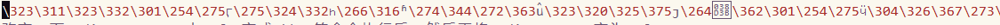

Tommy's Blog
目录
20200610-emacs-coding-system经验之谈
在windows使用emacs经常会遇到中文显示的问题，折腾很久，对中文显示问题有了一些经验。
我的emacs配置默认utf-8
如果遇到 %E6%B5%8B%E8%AF%95%E6%96%87%E4%BB%B6,可以尝试执行下面语句：
(decode-coding-string (dnd-unescape-uri "%E6%B5%8B%E8%AF%95%E6%96%87%E4%BB%B6") 'utf-8)执行结果："测试文件"
如果遇到\+数字，如下图：

我一般临时改变一下coding-system，由utf-8变成gbk。等命令执行后，然后再将coding-system变为utf-8。
(let* ((coding (prefer-coding-system 'gbk))) (xx) (prefer-coding-system 'utf-8))
在windwos使用emacs遇到与我一样的中文显示问题，可以尝试一下。
20200513-rime配置
参考资料：
https://github.com/rime/home/wiki/CustomizationGuide
https://github.com/ab9986/rime-sync/
- patch补丁原理
luna_pinyin_simp.custom.yaml 给 build\luna_pinyin_simp.schema.yaml 打补丁
default.custom.yaml 给 default.yaml 打补丁
写在patch里面就可以打补丁 配置文件
;;C:\Users\用户名\AppData\Roaming\Rime\luna_pinyin_simp.custom.yaml
patch: ;;使用全套西文標點 ;;有些用戶習慣在中文裏使用ASCII標點，那麼與其一個一個覆寫，不如 整套都換掉 。 ;;取得這份設定檔—— Rime 別樣設定，使用西文標點 在用戶資料夾保存爲 alternative.yaml ； ;;再將輸入方案中的「導入 default 設定」通過打 patch 替換爲「導入 alternative 設定」 ;;# luna_pinyin.custom.yaml ;;patch: ;;屏蔽默认按键绑定的 key_binder/import_preset: ;;只绑定+ - 方向键-向上 方向键-向下 key_binder/bindings: - {accept: minus, send: Page_Up, when: has_menu} - {accept: equal, send: Page_Down, when: has_menu} - {accept: comma, send: Page_Up, when: paging} - {accept: period, send: Page_Down, when: has_menu} ;;默认为进入应用默认英文 switches/@ascii_mode/reset: 1 ;;状态栏位显示图标 style/display_tray_icon: true;;C:\Users\用户名\AppData\Roaming\Rime\default.custom.yaml 在patch:增加
;;增加按shift返回英文 ascii_composer/switch_key/Shift_L: commit_code ascii_composer/switch_key/Shift_R: commit_code ;;状态通知始终显示 show_notifications_when: always
- 词库，参考https://www.jianshu.com/p/300bbe1602d4
新建 简化字自定义配置文件 luna_pinyin_simp.custom.yaml 输入内容
(自定义配置文件名字格式: 简化字名称.custom.yaml)
# luna_pinyin_simp.custom.yaml patch: # 指定自定义词库位置 "translator/dictionary": luna_pinyin.my
新建luna_pinyin.my.dict.yaml (文件名和上面指定词库位置保持一致)输入内容
(词典名字格式: 名称.dict.yaml)
--- name: luna_pinyin.my version: "1.0" sort: by_weight use_preset_vocabulary: true # 此处为扩充词库（基本）默认链接载入的词库 import_tables: - luna_pinyin ... # 自定义词语 英雄联盟 ying xiong leng meng 100 吃鸡联盟 chi ji lian meng 100
个人词库配置
在installation.yaml中增加,然后放到C:\Users\用户名\AppData\Roaming\Rime\，重新部署，右键-用户资料同步。
installation_id: "ab9986" sync_dir: D:\ab9986\home\rime-sync
20200407-emacs-dump思路
利用周末的时间，将自己配置转成支持dump,我的思路：
- dump我理解本质上预加载模式。
- 我将我的emacs配置分为两个部分：第一部分是可预加载配置；第二部分，不可以预加载配置。
- dump启动时，先用将可预加载配置生成dump，启动后执行不能预加载emacs配置。
- 正常启动时，先执行可预emacs加载配置，在执行不能预加载emacs配置。
我经验：
- 可预加载配置不要去加载主题（包括字体）配置，把主题（包括字体）配置放在不能预加载emacs配置，省去很多麻烦。
- srefactor包,不可以进行预加载。
大部分软件包都是可以预加载，我没有可以预加载：如下
(dired-recent-mode t) (desktop-save-mode t) (savehist-mode t) (recentf-mode t) (ivy-mode t) (counsel-mode t) (ivy-rich-mode t) pyim
- dump在windows 10上基本是可以秒开，建议上dump，带来收益远大于配置变动导致各种问题。
- 其他可以参考casouri博客：https://archive.casouri.cat/note/2020/painless-transition-to-portable-dumper/index.html
- 参考：https://emacs-china.org/t/portable-dumper/11584/48
20200305-docker学习
- windows 安装docker
最新版只要安装Docker Desktop Installer，参考https://docs.docker.com/docker-for-windows/install/。 编写Dockerfile
详细dockerfile文件在参考https://github.com/ab9986/docker-debian 可以找到。
# This dockerfile is for Tommy's debian # VERSION 1.0.0 # Author: Tommy # Command format: Instruction [arguments / command] .. # Base image to use FROM debian:buster # Maintainer: MAINTAINER Tommy ab9986@qq.com # Commands to update the image RUN mv /etc/apt/sources.list /etc/apt/sources.list.bak RUN echo "deb http://mirrors.cloud.tencent.com/debian buster main contrib non-free" >>/etc/apt/sources.list RUN echo "deb http://mirrors.cloud.tencent.com/debian buster-updates main contrib non-free" >>/etc/apt/sources.list RUN echo "deb-src http://mirrors.cloud.tencent.com/debian buster main contrib non-free" >>/etc/apt/sources.list RUN echo "deb-src http://mirrors.cloud.tencent.com/debian buster-updates main contrib non-free" >>/etc/apt/sources.list RUN apt-get clean all RUN apt-get update RUN apt-get upgrade -y # Install RUN apt-get install -y vim emacs git # New group ab9986 and New user tommy RUN groupadd -r ab9986 && useradd -r -m -g ab9986 tommy # tommy run docker USER tommy WORKDIR /home/tommy RUN whoami RUN pwd # do some thing RUN git config --global http.sslverify false RUN cd /home/tommy/ RUN rm -rf .emacs.d ENV TERM xterm-256color ENV LANG=zh_CN.UTF-8
创建docker镜像
docker build -t ab9986/dabian .
运行docker 镜像
;;默认用 root 运行 docker run -it ab9986/dabian bash ;;制定用户tommy运行 docker run -u tommy -it ab9986/dabian bash
- 获取容器
docker ps - 执行命令（root）
docker exec -ti -u root 70593ee02e37 bash - 从容器里面拷文件到宿主机
docker cp 容器名:要拷贝的文件在容器里面的路径 要拷贝到宿主机的相应路径 从宿主机拷文件到容器里面
docker cp 要拷贝的文件路径 容器名:要拷贝到容器里面对应的路径 ;;是用root 权限 ls -al 查看权限 docker exec -ti -u root 70593ee02e37 bash ;;更改某个文件或目录的属主 chown -R tommy
相关资料：
https://gitlab.com/koral/emacs-nativecomp-dockerfile/-/blob/master/Dockerfile
https://hub.docker.com/r/andreacorallo/emacs-nativecomp
https://github.com/manateelazycat/https://github.com/manateelazycat/emacs-application-framework
https://github.com/seagle0128/.emacs.d
如何创建docker 镜像：
https://jingyan.baidu.com/album/597a06431927c0312b52433e.html?picindex=1
使用Github自动构建Docker：
https://www.jianshu.com/p/b20bcfba52a8
https://blog.csdn.net/u013246898/article/details/53053771
20190731-恰到好处
周五早上出差，回来时候，老婆跟我讲，小娃仔咳嗽厉害。当时想周四小娃仔还是好好的，所以想等今天晚上看看咳嗽情况再决定是否去医院。由于担心医院人多，所以预约明天10点钟儿科门诊。到晚上睡觉时，小娃仔咳得好像要把肺咳出来，一晚上醒醒睡睡，还一直要老婆抱着睡。小娃仔、老婆、我三人那天晚上困的不行。
第二天，小娃仔经历一晚上的咳嗽，整个精神状态很差。老妈早上看到小娃仔，脸上挂满怜惜说：小娃仔都瘦了一圈。老爸也在旁说，要带小娃仔去看医生。小娃仔喝完牛奶和粥，就去医院。
在医院取了预约号，后找护士要了温度计，给小娃仔量体温，过了5分钟，给护士看说是37.3度。
听到叫号，我就先进，老婆抱着小娃仔后进去。医生先问：什么情况。我说：小孩发烧37.3，昨天晚上咳嗽厉害，醒来三四次。老婆补充到：睡了三四次。然后，医生赶紧拿出听诊器，先听背部，后听一下肺，最后看看喉咙。医生说是气管炎，我问严重不，医生说不严重，我赶紧把之前看病开的药给医生看（出门后，老婆提醒上次感冒开得药还有，电话给老妈）。医生说四个药有三个药可以吃，然后问我，要不要做雾化。我说小娃仔做雾化会哇哇大哭。医生说那就开另外两个药，我心想医生专业就说好。去排队拿药后，才知道开了头孢和酮替芬片。
回到家中，仔细看了复方福尔可定口服液、头孢的说明书，看到很多副作用，都不想给小娃仔吃药。头孢是抗生素，酮替芬片也是三岁小孩禁用。自己仔细思考了，小娃仔发烧没有很高，说明感染没有很严重。只要晚上睡得好，过几天自身免疫力就能够恢复。要想晚上睡得好的话，就要进行必要止咳，所以还是决定用复方福尔可定口服液。小娃仔一岁十个月，依照说明书30个月以内每次2.5毫升。当天中午，就给小娃仔服用了2.5毫升复方福尔可定，咳嗽明显好转。晚上睡前，小娃仔又服用了2.5毫升复方福尔可定，整晚睡得比较好，中途只醒来一次。
周天早上醒来，小娃仔蹦蹦跳跳，吃饭也比前天多，咳嗽频率低。晚上时，我准备不给小娃仔吃复方福尔可定，但老婆、妈妈、爸爸都强烈不同意。自己也心里动摇，就给小娃仔继续吃了2.5毫升复方福尔可定。晚上小娃仔睡得也不错。
周一中午，午休时间，上网看了复方福尔可定。不查不知道，发现福尔可定被用于止咳，属于中枢性镇咳药，很多国家禁止6岁小孩禁用。复方福尔可定还包含盐酸伪麻黄碱、盐酸曲普利啶、愈创木酚甘油醚，都副作用。懊悔，昨天不应该在小娃仔咳嗽不影响睡眠还进行服用复方福尔可定。
晚上，小娃仔睡了，我在网上找到一个知名医院医生介绍复方福尔可定如何用。名医将国外看病贵，很多老外自己去买止咳药，而止咳药中大量服用会上瘾，所以国外都禁用。自己琢磨一下：名医说也有一些道理。
疾病分为三个大类（个人分类）：第一类，利用自身免疫力能够全愈的，例如感冒；第二类，需要借助外力（药物）才能彻底治愈，例如骨折；第三类，只能缓解，无法治愈，例如免疫缺陷疾病。所以对于感冒，一般人类都是能够依据自身免疫力全愈的。这个时候，药物只能起到缓解症状和缩短病程。中国古话云是药三分毒，药太猛了伤根基，药量不够又达不到预期效果。药量恰到好处，考验医生对病因、病状客观认识。但又不得不吐槽国内医生看一个病人不到五分钟，后续也没有跟进病人（没有办法检验自己对病因、病状判断）。医生专业专业水平进一步提升空间被无形扼杀。再加上国内医院诊疗费用极低（与国外相比），药品费用远超出诊疗费。现有国内医疗体制，以药养医，间接导致过度医疗。
当然，恰到好处是一种艺术。这种艺术是专业水平、阅历，对病因和病症客观把握综合而来的。无法量化各各条件，每一个病人病因和病症各不相同。用计算机领域的专业术语来表达就是输入条件每次都不同，无法测试验证。
生活中很多时候，要做到恰到好处都是极难的。比如工具迷失，我使用 Emacs快有三年了。Emacs 可拓展性太强了，被称为神一样编辑器。这三年，不断更新自己 Emacs 配置，而且有时一个功能反复被丢弃捡起或者为了一个不常用功能花费大量时间，自己也迷失了。感觉自己被 Emacs给反噬了，忘记自己才是 Emacs的主人。
人的生命太短，虽然人最长能活100多岁。但真正不糊涂时间又有多少？所以恰到好处，是追求生命最大价值一种方式。
最后，希望自己以后能够尽量靠近恰到好处。
20190617-eclipse配置
eclipse配置导出导入方案
If you want preserve all your settings, simply copy the
.metadata/.plugins/org.eclipse.core.runtime/.settings
directory into your desired workspace directory
You can also export the preferences you set in the template workspace and then import them into other workspaces. This is the preferred method supported by Eclipse.
Go to
File->Export then choose General->Preferences
click Next then select the “Export all” radio button and fill in or browse to a file path where you want to save the preferences . Click Finish and your preferences are exported to that file.
Select
File->Switch Workspace,>… to switch to a different workspace.
When Eclipse restarts in the new workspace select File->Import then General->Preferences click Next and browse to your saved preferences file and click Finish to import your preferences into the current workspace.
参考：https://stackoverflow.com/questions/7933882/setting-preferences-for-all-eclipse-workspaces?rq=1
emacs+
搜索时，不支持中文，建议小白不要安装，大神可以尝鲜。
eclipse的emacs按键插件：
https://github.com/MulgaSoft/e4macs
eclipse-color-theme
https://github.com/eclipse-color-theme/eclipse-color-theme
安装方法：
After installing, go to Window->Preferences->General->Appearance->Color Theme to change the color theme
操作步骤
- 安装emacs+-尝鲜，建议不安装
将附件emacs+4.2中的plugins和features复制eclipse目录中。
Window->Preferences->General->Keys->Scheme->Emacs+ Scheme
将 Switch to Editor 快捷键除去 - 字体调整
Window->Preferences->General->Appearance->Colors and Fonts->Basic->Text Font->YaHei Consolas Hybrid 12.0
Window->Preferences->General->Appearance->Colors and Fonts->Basic->Text Editor Block Selection Font->YaHei Consolas Hybrid 12.0 - 缩减eclipse启动项
window --> preferences --> General --> Startup and Shutdown 去除不必启动项 - 去除编译的Validation
去除 Window->Preferences->Validation->Build 选项 - 将自动编译勾选框去除
- 去除更新
取消 Window->Preferences->Install/Update->Automatic Updates->Automatically find new updates and notify me
快捷键
个人认为快捷键是体系问题。emacs与vi的快捷键是两个完全不同体系，其中优缺点网络上争论很多。我个人是偏向emacs的快捷键体系，所以将eclipse也按照eamcs快捷体系进行设置，如下：
| 快捷说明 | 快捷键 | 备注 |
|---|---|---|
| Show Key Assist | Ctrl+H, B | |
| Quick Access | 改成 Alt+x | |
| Quick Switch Editor | Ctrl+X, B | |
| Open Resource | Ctrl+X, Ctrl+F | |
| Quick Outlin | Alt+S | |
| Find Next | Ctrl+N | |
| Find Previous | Ctrl+P | |
| Find Text in File | Ctrl+S | |
| Open Search dialog | Ctrl+O | |
| Save | Ctrl+X, Ctrl+S | |
| Save All | Ctrl+X, S | |
| Close All | Ctrl+X, Ctrl+C | |
| Forward History | Ctrl+X, Right | |
| Backward History | Ctrl+X, Left | |
| Cut | Ctrl+W | |
| Copy | Alt+W | |
| Paste | Ctrl+Y | 注意 when 要选In Dialogs and Windows |
| Undo | Ctrl+/ | |
| Select All | Ctrl+X, H | |
| Format | Ctrl+Alt+F | |
| Go to Line | Alt+G, G |
窗口布局
分为两个窗口：主窗口和从窗口，在编程时，最好能够双屏。
主窗口：用于编写和浏览代码
从窗口：用于浏览工程目录和其他信息（查询/编译等信息）
常见问题
阿里巴巴Java开发手册
不可见字符设置
General-Editors-Text Editors g
- 建议将不可见字符串显示出来
Show whitespace characters 勾选 - 用空格键代替tab键
Insert spaces for tabs 勾选
20190608-emacs配置
我对文学编程比较着迷，看到几个大神都将自己的 emacs 配置都改成用 org-mode 来管理，我的emacs 配置也用org-mode 来管理了，大家可以参考 https://ab9986.github.io/emacs-config.html